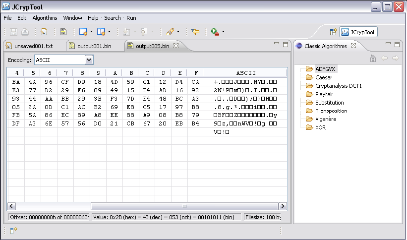

Dieses Tutorial führt Sie durch den Prozess einer Ver- und einer Entschlüsselung mit der modernen Strom-Verschlüsselung der Dragon-Chiffre.
Hinweis: Wie bei allen Algorithmen hier können Sie die folgenden Schritte nur ausführen, wenn Sie ein aktives Editor-Fenster haben.
Durch Auswahl des Menüpunktes Dragon im Menüpfad
Weitere Details über den Algorithmus selbst finden sich auf Erläuterungen zur Dragon-Verschlüsselung.
Wählen Sie die Größe von Schlüssels und IV: 128 bit oder 256 bit. Geben Sie dann die entsprechenden Werte für Schlüssel und IV im gewählten Format (hex oder binär) ein. In unserem Beispiel verwenden wir 128 bit als Schlüssel- / IV-Größe und hexadezimal als Eingabeformat für beide Eingaben. Unser Schlüssel hat alle 128 bit auf "1" gesetzt, und unser IV hat den Wert 1 (d.h. 127 führende "0"-Bits und ein "1"-Bit). Durch Klicken auf die Schaltfläche Fertigstellen wird der Verschlüsselungsprozess gestartet.
Hinweis: Moderne Chiffren arbeiten mit Bits / Bytes, aber nicht mit Zeichen. Daher wird ihre Ausgabe immer in einem Hex-Editor und nicht in einem Texteditor angezeigt.
Der resultierende Geheimtext (in Ausgabe001.bin) kann entschlüsselt werden, indem genau dieselben Parameter wie bei der Verschlüsselung gewählt werden (da es sich um eine symmetrische Stromchiffrierung handelt): identischer Größe von Schlüssel / IV und entsprechende Werte in demselben Assistenten, der für die Verschlüsselung verwendet wurde.
Klicken auf die Schaltfläche Fertigstellen startet nun die Entschlüsselung des Geheimtextes und der korrekte Klartext wird in einem neuen Hex-Editor angezeigt (out002.bin im Screenshot unten).

Verwenden Sie – in der Gruppierung "Ausgabeoptionen"– das zweite Optionsfeld Ausgabedatei und Schlüsselstrom jeweils in separatem Editor anzeigen, werden 2 neue Hexeditor-Registerkarten erstellt: Eines enthält den generierten Schlüsselstrom aus diesem Ver-/Entschlüsselungsvorgang, das andere enthält entweder den verschlüsselten Klartext oder den entschlüsselten Geheimtext. Ein Vergleich des Schlüsselstroms aus dem Verschlüsselungsvorgang mit dem des Entschlüsselungsvorgangs zeigt, dass – bei identischen Eingabeparametern – ein identischer Schlüsselstrom erzeugt wird.

Der Schlüsselstrom wird in einem neuen Editor angezeigt (out004.bin oben), wobei der Klartext wie gewohnt angezeigt (out003.bin) wird.
Selektieren Sie den Radiobuttons Nur Schlüsselstrom anzeigen, wird die angegebene Anzahl Bytes des erzeugten Schlüsselstroms in einer weiteren Hexeditor-Registerkarte angezeigt. Der Eingabebereich für die Anzahl der zu generierenden Bytes des Schlüsselstroms ist nur aktiviert, wenn der Radiobutton Nur Schlüsselstrom anzeigen ausgewählt ist.
Unser Beispiel zeigt die ersten 100 Bytes des Schlüsselstroms unter Verwendung des gleichen Schlüssels und des gleichen IV wie zuvor.